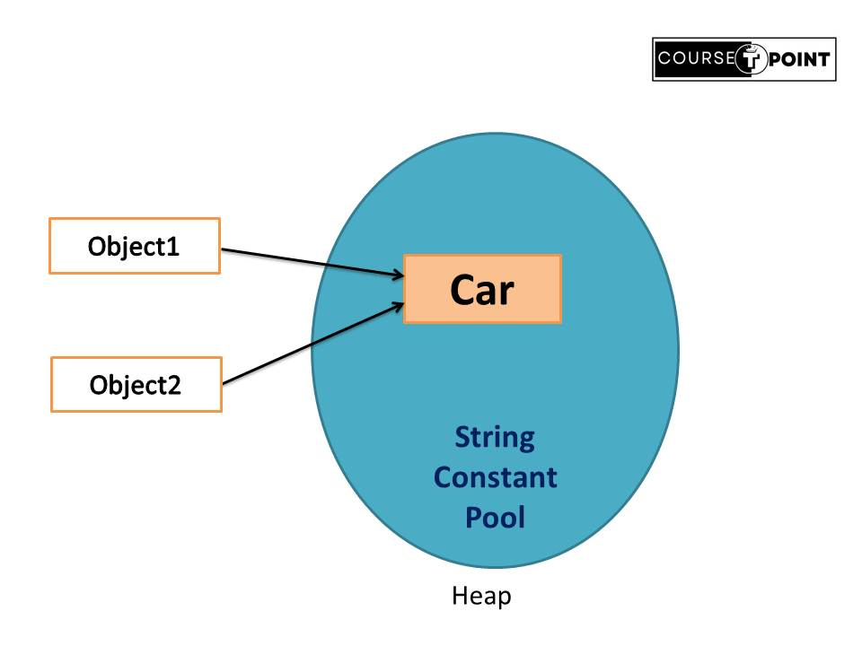
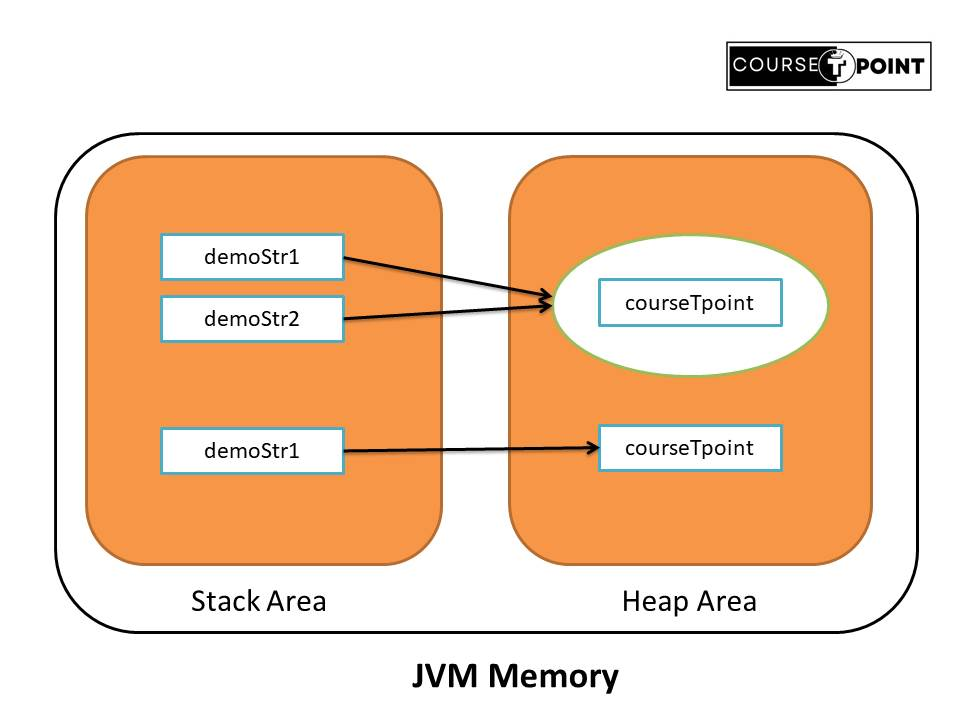

Strings in Java
| Table Of Content | |
|---|---|
String in Java
Generally, String is a sequence of character but In java, String is an object that represent squence of
charater. String is immutable in java that mean Strings are constant; their values cannot be changed
after they are created. String to be initialize into double quote.
For Example : String str = "courseTpoint";
is equivalent to:
char arr[] = {'c','o','u','r','s','e','T','p','o','i','n','t'};
String str = new String(arr);
Creating String in Java
If we are creating string in java some points to be remember.
- Strings are immutable in java.
- import java.lang.String package before initialize string sometimes it show an error.
- java string is more reliable compare to c string.
- Java string are creating into two ways :
- Using String Literal
- Using new Keyword
String Literal
String Literal make java memory more effecient because no new object is create when it is already exist in the constant memory pool. Java String literal is created by using double quotes.
Syntax
String < StringName > = "< SequenceOfString > "
Let consider an example to better understand about string suppose only one object will be created. Firstly JVM will not search any string object with the value “car” in the string constant pool, if it not exist in string constant pool it will create a new object. After that it will search the string with the value “car” in the pool, it will not create a new object but will return the reference to the same instance that make memory more Efficient.
String Object = "Car";
We will create String with name Object it doesn't exist in constant pool, create new object and placed in a pool.
String Object1 = "Car";
String Object2 = "Car"; //It doesn't create a new object of the string instance

Using New Keyword
If you can declare a string using the 'new' keyword to create a new instance of the String class. In this case JVM will create a new string object in normal(non-pool) heap memory and the literal "Car" will be placed in the string constant pool. The variable str will refer to the object in a heap (non-pool).
For Example
String str = new String("courseTpoint");
import java.lang.String;
class Main{
public static void main(String [] args){
String str1 = "Rohit"; // string Literal
String str2 = new String("courseTpoint"); // using new keyword
System.out.println(str1);
System.out.println(str2);
}
}
Output:
Rohit
courseTpoint
Immutable String
We known about java string is immutable. When create string object their values cannot be changed. But why java strings are immutable?
- Security : Since string are often used to store sensitive data like usernames and passwords, immutability helps prevent values from changed hatefully.
- String pool: It store string literal. Because string are immutable, the JVM can optimize memory allocation by storing only one copy of each literal string, which can be shared across different string variables.
- Performance : Immutable string can be cached and reuse without the need for creating new objects, that help to increase performance.
- Synchronization : Since strings cannot change state, they are naturally thread safe which simplifies the development of concurrent application.
/*Program to demonstrate java is immutable.*/
class Immutable{
public static void main(String [] args){
String fname = "Aditya";
fname.concat(" Pratap"); // concatination help to join two string .
System.out.println(fname); // print Rohit due to string is immutable
}
}
Output : Aditya
In the above program we can see object fname point to Aditya instead
Aditya Pratap.
But, if we assign to reference variable it refers to Aditya Pratap.
please note original string "Rohit" remain unchanged in the string pool.
class Immutable{
public static void main(String [] args){
String fname = "Aditya";
fname = fname.concat(" Pratap"); // assign to reference variable
System.out.println(fname);
}
}
Output : Aditya Pratap
String in Memory
Whenever a String Object is created as a literal, the object will be created in the String constant
pool. This allows JVM to optimize the initialization of String literal.
String demoStr = "courseTpoint";
The string can also be declared using a new operator i.e. dynamically allocated. In case of String
are dynamically allocated they are assigned a new memory location in the heap. This string will not
be added to the String constant pool.
String demoStr = new String("courseTpoint");
import java.lang.*;
class StringMemory{
public static void main(String [] args){
String demoStr1 = "courseTpoint"; // declare using string literal
String demoStr2 = "courseTpoint"; // declare using string literal
String demoStr3 = new String("courseTpoint"); // declare using new Keyword
System.out.println(demoStr1);
System.out.println(demoStr2);
System.out.println(demoStr3);
}
}
Output:
courseTpoint
courseTpoint
courseTpoint
In the above program String Object is created in Heap area and Literals are stored in special memory area known as string constant pool. As shown figure :
String Method
String method operate on java string. They can be used to find length of the string,
appent to string, lowercase etc.
Some commonly used strimg methods.
- String length() : They should find total number of characters present in the string
including white spaces.
strName.length(); - String toLowerCase() : Return new string which has all the lowercase characters
from the string name.
strName.toLowerCase(); - String toUpperCase() : Return new string which has all the UPPERCASE characters
from the string name.
strName.toUpperCase(); - String trim() : Return a new String after removing all the leading and trailing
space from the original string.
strName.trim(); - String substring(int startIndex) : Return a substring from when you start upto end
substring.
strName.substring(int start); - String substring(int start , int end) : Return a substring from when you start and
when you end substring.
strName.substring(int start , int end); - String startsWith(String prefix) : Return true if String start with given prefix
otherwise false.
Note :It is case sensitivestrNmae.startsWith(string prefix); - String endsWith(string suffix) : Return true if string ends with given suffix
otherwise false.
strName.endsWith(sting suffix); - String charAt(int index) : Returns a char value at the given index number.
strName.charAt(int index); - String concat() : Return a combines specified string at the end of other string.
strName.concat(otherString); - String compareTo() : Return positive, negative, and zero compare given string with
the current string.
strName.compareTo(OtherString)
/*Program to demonstrate working of string methods*/
import java.lang.String;
class DemoString{
public static void main(String [] args){
//String declare
String str = "course T point";
String str1 = " Jai Hind ";
String str2 = "Hello";
String str3 ="Java";
//find length of string using length() method
System.out.println("Length of String str : " + str.length());
//convert to lowercase
System.out.println("String str in lowercase : " + str.toLowerCase());
//convert to UPPERCASE
System.out.println("String str in Uppercase : " + str.toUpperCase());
// String trim
System.out.println("string str1 is trim : " + str1.trim());
// String substring at start
System.out.println("substring from start str : " + str.substring(3));
//String substring start as well as end
System.out.println("substring from start to end str : " + str.substring(3,10));
// String startswith
System.out.println("Is string str2 start with 'Se' : " + str2.startsWith("Se"));
// String endsWith
System.out.println("Is string str3 ends with 'Ava' : " + str3.endsWith("Ava"));
System.out.println("Is string str3 ends with 'ava' : " + str3.endsWith("ava"));
// String charAt
System.out.println("Character in the given index : " + str3.charAt(2));
// String concat
System.out.println("combine str2 with str3 : " + str2.concat(str3));
//String compareTo
System.out.println("Compare str2 with str3 : " + str2.compareTo(str3)); //-2 because h is 2time smaller than j
}
}
Output:
Length of String str : 14
String str in lowercase : course t point
String str in Uppercase : COURSE T POINT
string str1 is trim : Jai Hind
substring from start str : rse T point
substring from start to end str : rse T p
Is string str2 start with 'Se' : false
Is string str3 ends with 'Ava' : false
Is string str3 ends with 'ava' : true
Character in the given index : v
combine str2 with str3 : HelloJava
Compare str2 with str3 : -2
CharSequence Interface
The CharSequence interface is used to represent sequence of characters. String , StringBuffer and StringBuilder classes is implemented means in java we can create string in three ways.
- String
- StringBuffer
- StringBuilder
String in Java is immutable on other hand StringBuffer and StringBuilder are mutable. That's mean string is not changed. whenever we change any string, a new instance is created.
StringBuffer
StringBuffer is mutable in Nature and it is tread safe. StringBuffer creates strings of flexible length that can be modified in term of both length and content. we can insert characters and substrings in middle of a string, or append string at end.
StringBuffer demoStr = new StringBuffer("courseTpoint")
import java.lang.StringBuffer;
class StringManipulation{
public static void main(String [] args){
StringBuffer str = new StringBuffer("course");
str.append("T");
str.append("point");
System.out.println(str);
}
}
Output : courseTpoint
Constructor of StringBuffer class
- StringBuffer() : create an empty buffer with initial capacity of 16.
- StringBuffer(String str) : Creates a string buffer with the specified string.
- StringBuffer(int capacity) : creates an empty string buffer with the specified capacity as length.
- StringBuffer(CharSequence chars) : create an object that contains the character sequence contained in chars.
Methods for Java StringBuffer Class
| Methods | Description |
|---|---|
| length() | The current length of stringBuffer found by length() method. |
| capacity() | The Total allocated capacity found by the capacity() method. |
| append() | Add text at the end of existing string. |
| setLength() | set the length of string with a stringbuffer object by setLength() method. |
| ensureCapacity() | Set the least possible size of the buffer by the ensureCapacity() method. |
| insert() | Insert the string at specified indexed position by insert() method. |
| reverse() | reverse te character within a StringBuffer object using reverse() method. |
| delete() | delete a sequence of character within a StringBuffer by using delete() method. |
| deleteCharAt() | delete the character at the index specified by loc. |
| replace() | replace one set of charcater with another set inside a StringBuffer object by calling. |
StringBuilder
StringBuilder introduced in JDK5 version of Java, StringBuilder is a recent addition to java's string handling capabilities. StringBuilder is very much similar to StringBuffer but one important difference : it is not thread-safe. and it is faster performance compare to StringBuffer. However, in case in which you using multithreading, you must use StringBuffer rather than StringBuilder.
StringBuilder demoStr = new StringBuilder("courseTpoint");
import java.lang.StringBuilder;
class StringManipulation{
public static void main(String [] args){
StringBuilder str = new StringBuilder("course");
str.append("T");
str.append("point");
System.out.println(str);
}
}
Output : courseTpoint
Constructor of StringBuilder class
- StringBuilder() : Constructs a StringBuilder with no characters in it and an initial capacity of 16 characters.
- StringBuilder(int capacity) : An initial capacity specified by the capacity argument.
- StringBuilder(CharSequence chars) : Constructor a StringBuilder that contain the same characters as the specified CharSequence.
- StringBuilder (String str) : Constructors a StringBuilder initialize to the contents of the specified string.
Difference between StringBuilder and StringBuffer
| Aspect | StringBuffer | StringBuilder |
|---|---|---|
| Introduced | StringBuffer is Introduced by JDK 1. | StringBuilder is Introduced by JDK 5. |
| Thread safe | StringBuffer is thread-safe(Synchronized) multiple threads can safely use the same instance. | StringBuilder is not thread-safe(Asynchronized). Intended for single-threaded scenarios. |
| Peformance | StringBuffer is slower Performance compare to StringBuilder. | StringBuilder is faster Performance compare to StringBuffer. |
| Efficient | StringBuffer is less Efficient than StringBuilder. | StringBuilder is more Efficient than StringBuffer. |
| Syntax | StringBuffer str = new StringBuffer() | StringBuilder str = new StringBuilder() |
String Tokenizer
StringTokenizer class are used to broke down String into tokens based on specified delimiter character. It is simple approach to break a string.
It does not provide the facility to differentiate between numbers, quoted strings or identifiers like StreamTokenizer class does.
Constructors of the StringTokenizer class
| Constructor | Description |
|---|---|
| StringTokenizer(String str) | Constructs a string tokenizer for the specified string. |
| StringTokenizer(String str, String delim) | It creates StringTokenizer with specified string and delimiter. |
| StringTokenizer(String str, String delim, boolean returnValue) | It creates StringTokenizer with specified string, delimiter, and returnValue. |
Methods of StringTokenizer class
| Type and Method | Description |
|---|---|
| int countTokens() | calculate the total number of tokens. |
| boolean hasMoreTokens() | Tests if there are more tokens available from this tokenizer's string. |
| boolean hasMoreElements() | Return the same value as the hasMoretokens Method. |
| object nextElement() | Return the same value as the nextToken method, except that its declared return value is object rather than String. |
| String nextToken() | Return the next token from this String tokenizer. |
| String nextToken(String delim) | Return the next token in this string tokenizer's string. |